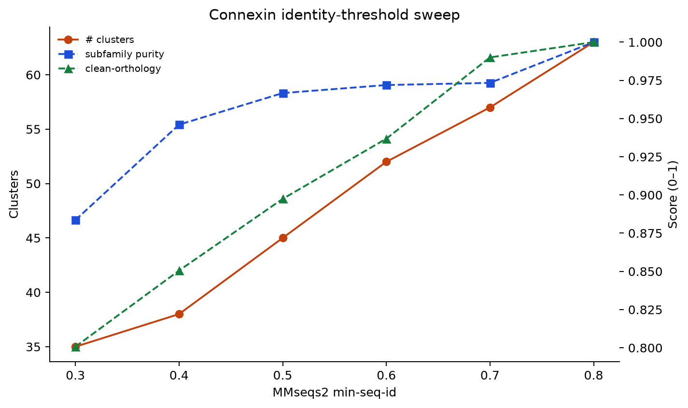
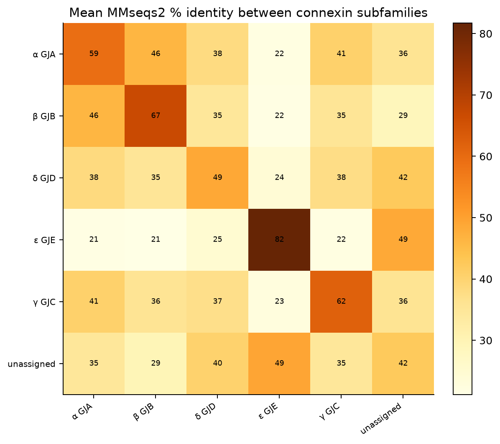
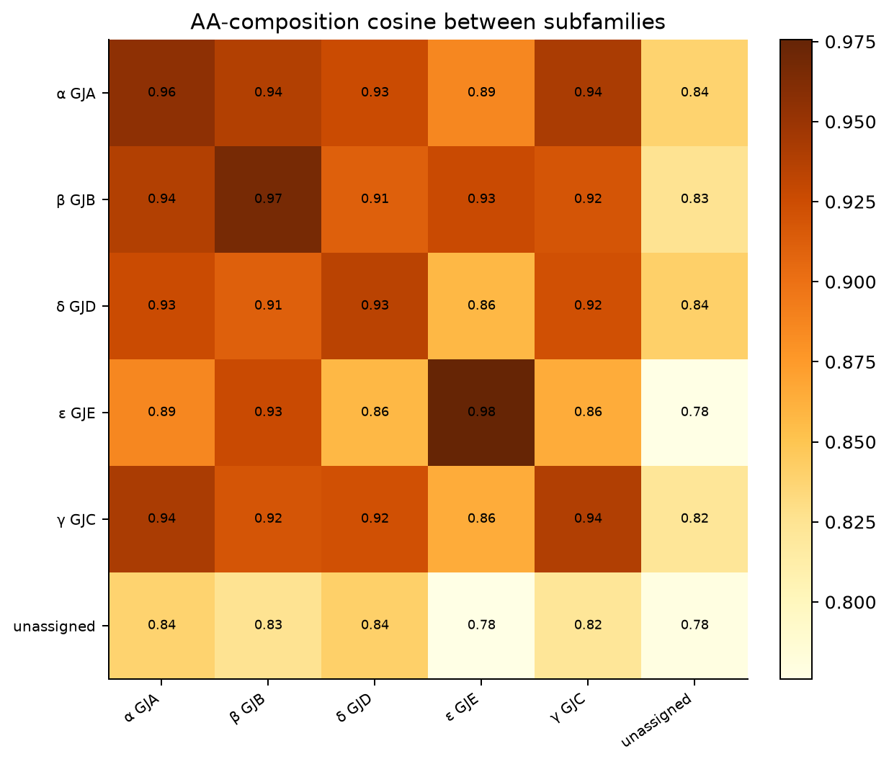
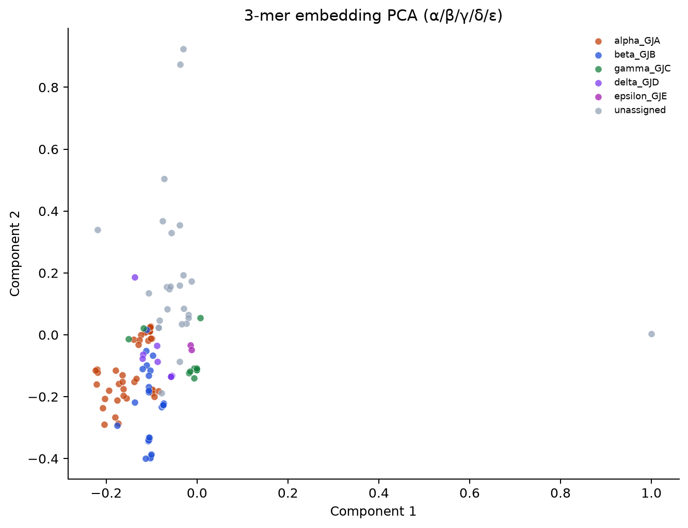
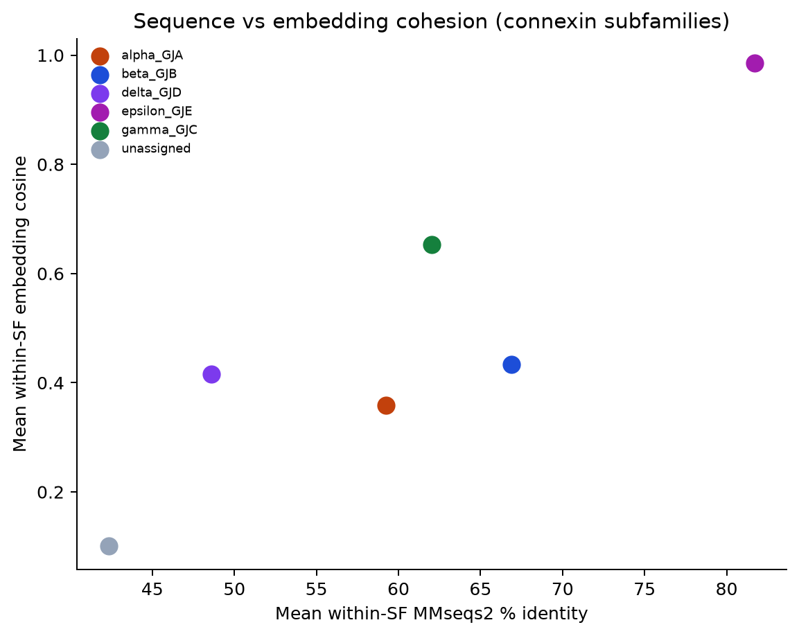
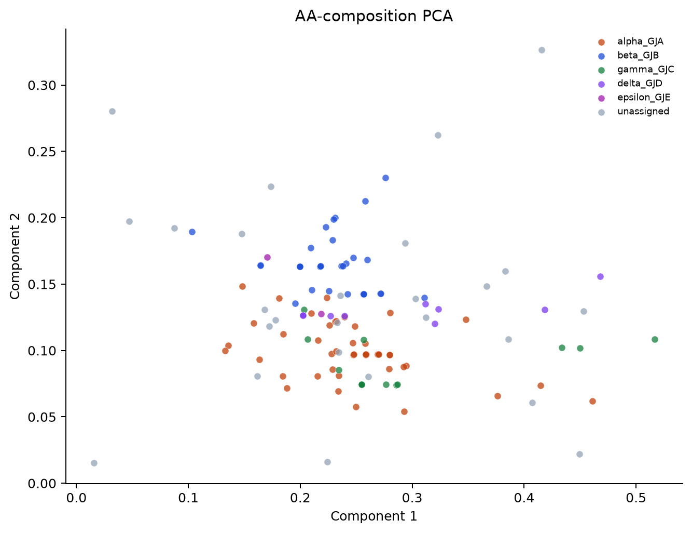

127proteins in all-vs-all
6identity thresholds
4similarity approaches
Key results
- MMseqs2 sweep: highest α/β/γ/δ purity 1.00 at min-seq-id=0.80 (63 clusters).
- Within-subfamily median identity ~56.6% vs between-subfamily median 40.1% — α vs β are sequence-separable but one family.
- 3-mer embedding cosine: same-subfamily 0.492 vs different -0.053.
- AA-composition cosine barely separates groups (same 0.925 vs diff 0.880) — k-mers and MMseqs carry the structural signal.
- α (GJA) ↔ β (GJB) mean identity 46.4057% (n=1395).
- Caveat: discovery types are MMseqs best-hits; GJA1 vs GJA4 still need synteny to confirm locus identity.
Diagrams

Within-subfamily sequence identity

Subfamily × subfamily MMseqs2 identity

AA-composition cosine heatmap

3-mer embedding cosine heatmap

3-mer embedding PCA

Sequence vs embedding cohesion

AA-composition PCA
FASTA · metadata · all-vs-all · group matrix · curated insights · vs innexin